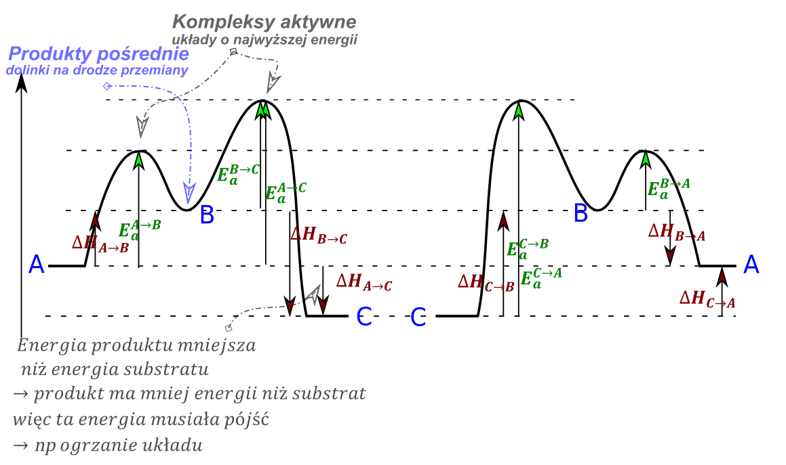
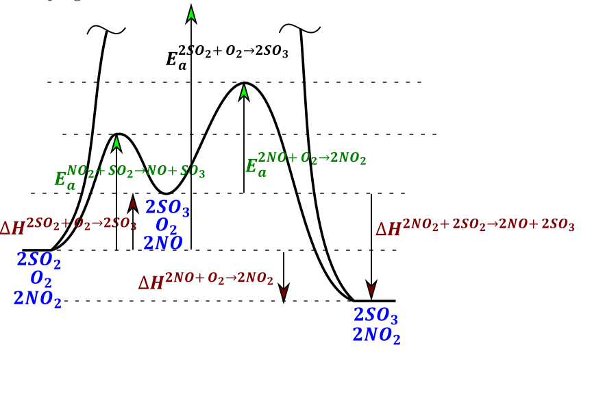
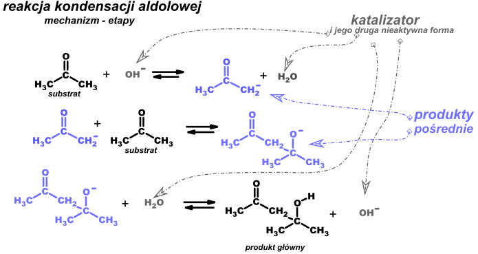
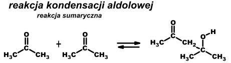
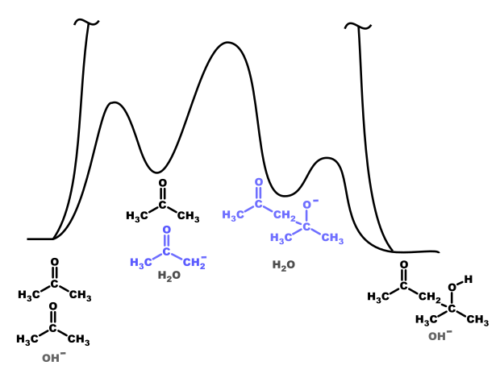

Czyli katalizator reaguje?? TAK reaguje, ale się odtwarza -> czyli jego stężenie defacto się nie zmienia, katalizator w mechanizmie reakcji będzie najpewniej miał przynajmniej dwie formy, jedną reaktywną wobec substratu, a drugą która jest niereaktywna i powoduje odtworzenie formy aktywnej. Katalizator powoduje obniżenie energii aktywacji (czy tam delta H) wobec reakcji niekatlaizowanej, może być ze zmianą mechanizmu reakcji-> możesz mieć inne równanie kinetyczne wobec reakcji niekatalizowanej. Z uwagi na brak zmian w energiach produktów i substratów katalizator (nie reagent- katalizator – takie też są) , nie ma wpływu na położenie stanu równowagi (nie zmienia stałej), zmienia (zwiększa) stałe szybkości (te małe k) obu reakcji w lewo i w prawo. -> katalizator przyśpiesza reakcje zmieniając stałe szybkości \(k\) zarówno w lewo jak i w prawo. OBIE . Katalizator może zmienić mechanizm reakcji = zmienić równanie kinetyczne reakcji.
Bo \(K = \frac{k_{1}}{k_{- 1}}\) no jeżeli K ma mieć zachowane to muszę zmienić zarówno \(k_{1}\) jaki \(k_{- 1}\)
Produkt pośredni to związek, który powstaje w reakcji, ale jednocześnie reaguje dalej, gdzie zachodzi dalej reakcja, na wykresie możemy powiedzieć że jest dolinka (Energie aktywacji i kompleksy aktywne to górki, a produkty pośrednie dolinki)
to układ o największej energii, najbardziej niekorzystny te górki na wykresie energetycznym

Otóż mamy reakcje utleniania
\[2SO_{2} + O_{2} \rightarrow 2SO_{3}\]
Trzeba Ci wiedzieć, że reakcja bez katalizatora nie zachodzi zupełnie. Za duża energia aktywacji.
Natomiast reakcja ta zachodzi jak dodamy \(NO_{2}\) , katalizator
Pierwszy etap działania katalizatora:
\[SO_{2} + NO_{2} \rightarrow SO_{3} + NO\ \]
Katalizator utlenienia \(SO_{2}\) i sam się redukuje do \(NO\) . A jak wiemy \(NO\ \) się utleniania się samemu tlenem.
\[2NO + O_{2} \rightarrow 2NO_{2}\]
I zwróć uwagę że jak zsumujemy te dwie reakcjie to nam się katalizator nam się skróci
\[2SO_{2} + 2NO_{2} + 2NO + O_{2} \rightarrow 2SO_{3} + 2NO + 2NO_{2}\]
I obie formy katalizatora skracają się.
\[2SO_{2} + O_{2} \rightarrow 2SO_{3}\]
Wykres energetyczny wygląda następującego:


Zsumowanie etapów powoduje skrócenie zarówno katalizatora (obu form) jak produktów pośrednich, reagentów tych nie widać w reakcji sumarycznej

Ale jakbyśmy chcieli narysować wykres energii od postepu

Te reakcja powyżej to reakcje złożone, składające się z wielu etapów. Z wielu możemy powiedzieć reakcji prostych. Kinetyka reakcji złożonej i jej równanie kinetyczne jest w sumie loterią trochę i tego się tak się łatwo nie da przewidzieć, jakie jest równanie kinetyczne reakcji złożonej.
Reakcja z kolei prosta to reakcja, która stanowi jeden etap reakcji złożonej. I W TYM WYPADKU JEST RZECZYWIŚCIE TAK, ŻE RÓWNANIE KINETYCZNE TAKIEJ REAKCJI JEST ZWIAZANE Z RÓWNANIEM REAKCJI , TAK ŻE RZĘDY = WSPÓŁCZYNNIKOM STECHIOMETRYCZNYM. ALE TO JEST TYLKO DLA REAKCJI PROSTEJ
Katalizator homogeniczny –jedna faza /jeden stan skupienia = wymieszany na poziomie roztworu/ z substratami dla reakcji \(2SO_{2} + O_{2} \rightarrow 2SO_{3}\ \ homo:NO_{2}\)
Heterogeniczny – dwie lub więcej fazy z substratami \(2SO_{2} + O_{2} \rightarrow 2SO_{3}\ \ hetero:V_{2}O_{5}\)
Szybkość reakcji chemicznej zależy od najwolniejszego etapu.
KATALIZATOR KATALIZUJE =PRZYŚPIESZA REAKCJE W OBIE STRONY
Esteraza katalizuje tworzenie estrów, ale ich hydrolize też.